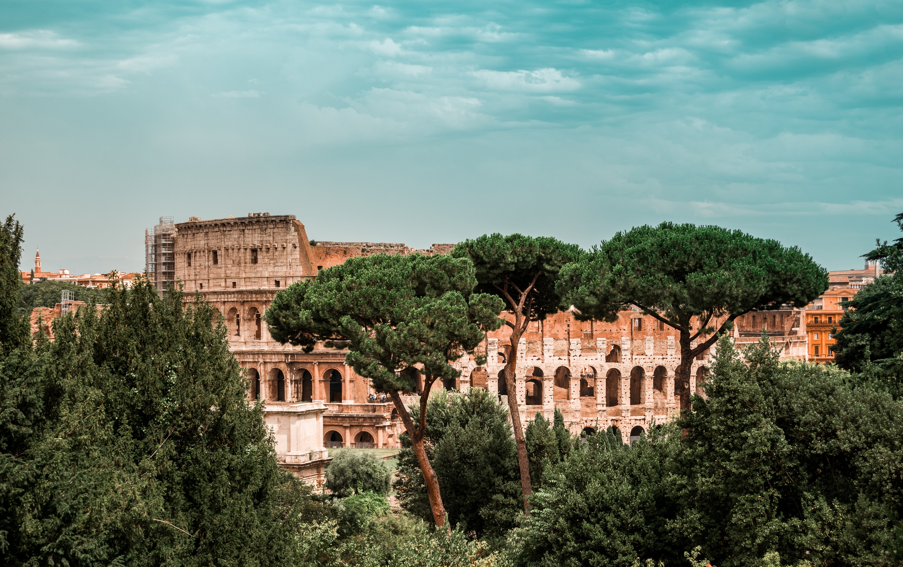
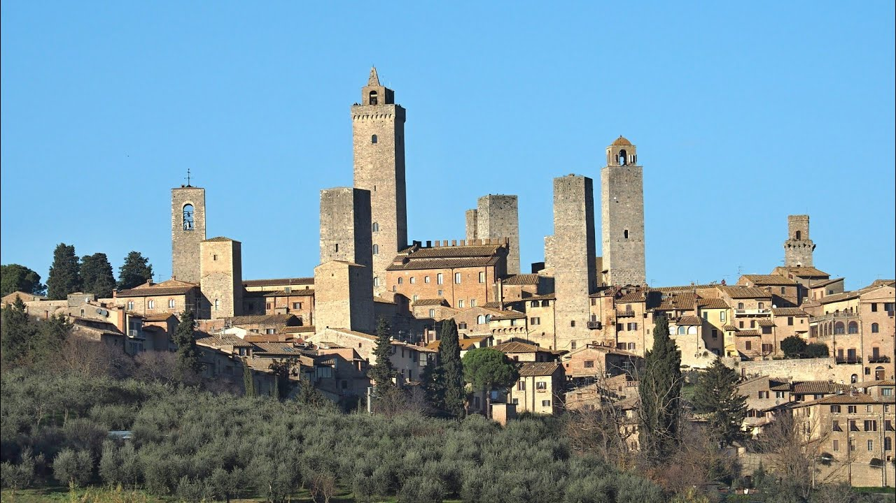
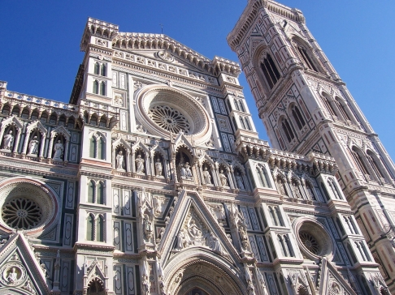
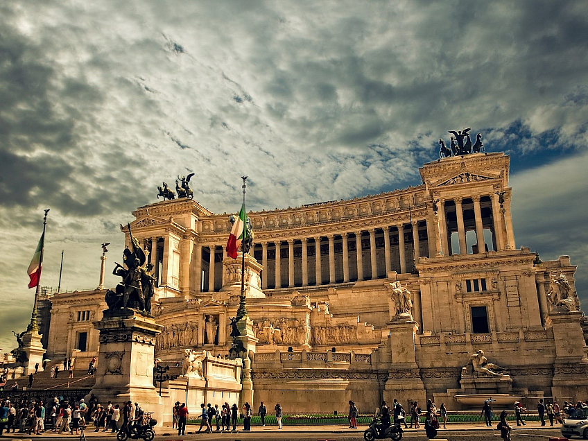

Historie Itálie sahá tisíce let zpět a zahrnuje mnoho významných událostí a civilizací. Od starověku až po moderní dobu hrála Itálie klíčovou roli v politice, umění, vědě a kultuře..
Starověk
Středověk
Obě tato období zanechala v Itálii bohaté dědictví v podobě umění, architektury, politických systémů a právních tradic. Starověká římská kultura a právo měly obrovský vliv na evropské dějiny, zatímco středověké městské státy a papežský stát ovlivnily politický a kulturní vývoj Itálie. Tato historie dodnes přitahuje turisty z celého světa, kteří chtějí objevovat bohatou minulost Itálie.
Renesance
Sjednocení
Druhá světová válka
Předválečné období: Italští fašisté pod vedením Benita Mussoliniho převzali moc v roce
1922.
Mussolini chtěl obnovit italskou říši a prosazoval agresivní politiku expanze, což vedlo k
italské invazi do Etiopie v roce 1935 a zapojení do španělské občanské války.
Vstup do války: Itálie oficiálně vstoupila do druhé světové války 10. června 1940 na
straně Osy
(společně s Německem a Japonskem). Mussolini doufal, že se připojí ke slavnému německému tažení,
ale italské vojsko čelilo vážným problémům.
Neúspěchy a porážky: Italská armáda trpěla zásadními nedostatky v organizaci, výzbroji a
taktice. Válka na Balkáně a severní Africe byla pro italské síly katastrofální. Italové byli
poraženi v bitvě u Tobruku a v důsledku toho bylo nutné poslat německé jednotky, aby pomohly
stabilizovat situaci.
Invaze na Sicílii a osvobození: V roce 1943 spojenecké síly, vedené Spojenými státy,
podnikly
invazi na Sicílii, což byl první krok k osvobození Itálie. Po pádu Mussoliniho režimu se Itálie
8. září 1943 vzdala Spojencům.
Italská sociální republika: Německé jednotky obsadily severní Itálii a vytvořily tzv.
Italskou
sociální republiku se sídlem v Saló. Byla to nacistická marionetní vláda, která pokračovala v
boji na straně Osy až do konce války.
Konec války a následky: Po ústupu Německa se italská odbojová hnutí spojila s ozbrojenými
silami
spojenců a pomohla převzít kontrolu nad zemí. 25. dubna 1945 byla Itálie osvobozena a Mussolini
byl popraven.